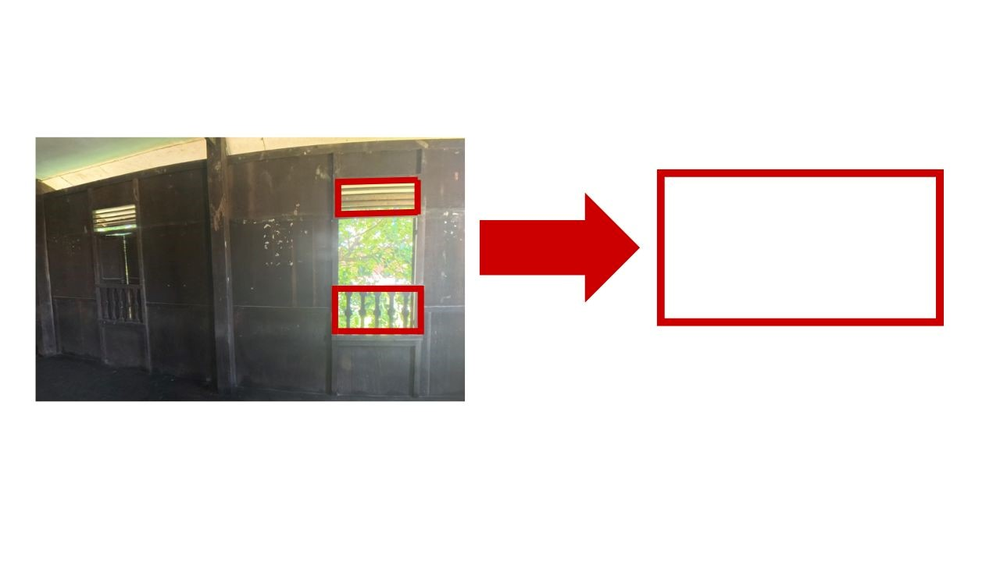
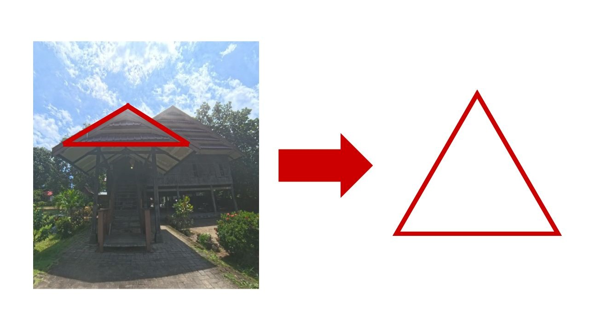
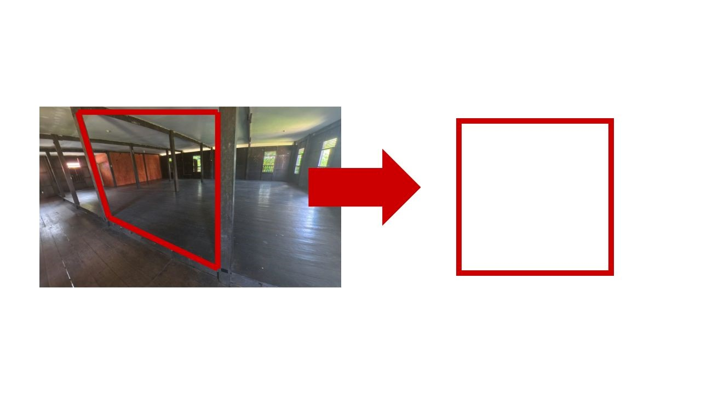
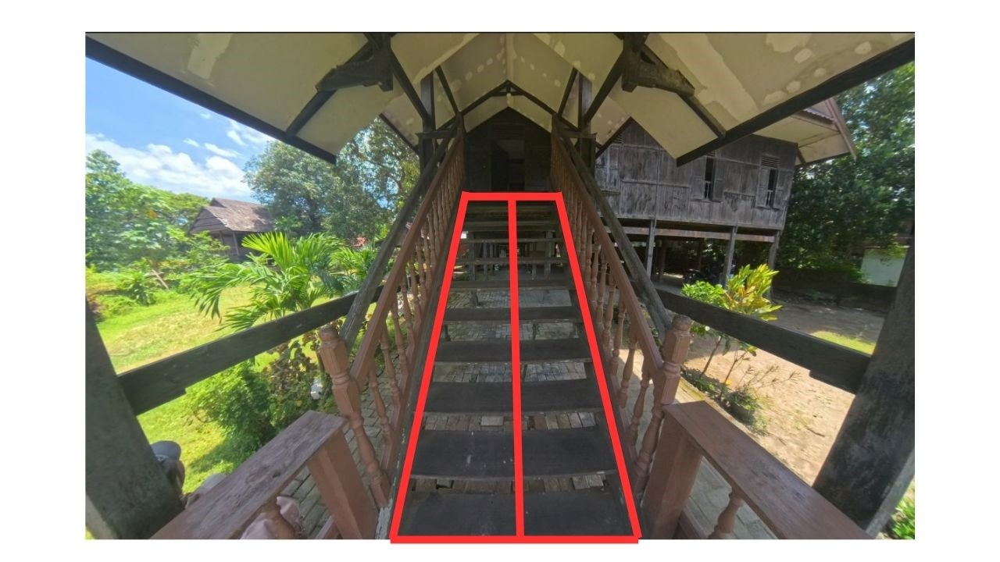
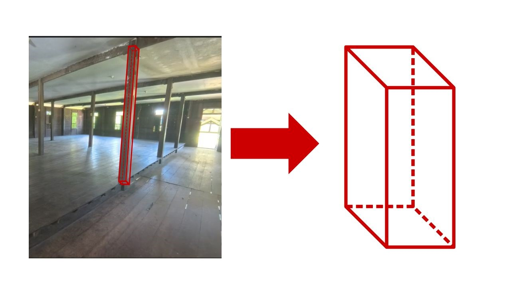
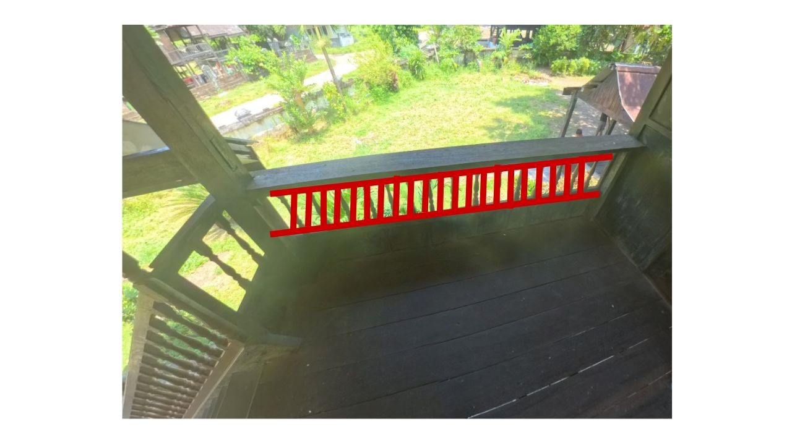

ETNOMATEMATIKA RUMAH ADAT SINJAI
Aspek Matematika dalam Rumah Adat Sinjai
Mempelajari keterkaitan antara etnomatematika dan arsitektur pada Rumah Adat Sinjai sebagai bagian dari warisan budaya Bugis.
Contoh Panorama 360°
Memutar panorama berikut membantu memvisualisasikan Rumah Adat Sinjai dalam bentuk tur virtual, sehingga pengunjung dapat mengamati bentuk bangunan, jendela, atap, tangga, tiang, dan pola berulang yang berkaitan dengan konsep matematika.
1. Pendahuluan
1.A Latar Belakang
Rumah adat di Kabupaten Sinjai merupakan bagian dari warisan budaya masyarakat Bugis yang mencerminkan identitas, nilai kehidupan tradisional, serta kearifan lokal yang diwariskan secara turun-temurun. Rumah adat ini tidak hanya berfungsi sebagai tempat tinggal, tetapi juga menjadi simbol status sosial dan budaya masyarakat setempat. Dalam konteks budaya Bugis, rumah tradisional memiliki peran penting sebagai representasi nilai-nilai sosial, struktur kehidupan keluarga, dan filosofi hidup masyarakat.
Secara arsitektur, rumah adat Bugis di Sinjai berbentuk rumah panggung yang dibangun menggunakan material kayu dengan teknik konstruksi tradisional yang kokoh. Struktur bangunan ini dirancang dengan mempertimbangkan kondisi lingkungan, kebutuhan penghuni, dan fungsi ruang yang beragam, sehingga menunjukkan kemampuan adaptasi masyarakat terhadap alam di sekitarnya. Selain itu, bentuk dan susunan ruang dalam rumah adat Bugis juga memiliki makna filosofis yang berkaitan dengan pandangan hidup dan sistem sosial masyarakat.
Dalam perkembangannya, rumah adat tidak hanya dilestarikan sebagai warisan budaya, tetapi juga dimanfaatkan sebagai sumber pembelajaran berbasis kearifan lokal. Bentuk bangunan, susunan ruang, dan elemen-elemen arsitektural yang terdapat pada rumah adat dapat digunakan untuk mengenalkan konsep ilmu pengetahuan secara kontekstual, termasuk konsep matematika. Dengan demikian, rumah adat Sinjai memiliki peran penting dalam menjaga keberlangsungan budaya sekaligus menjadi media pembelajaran yang bermakna, khususnya dalam kajian etnomatematika.
2. Pembahasan
2.A Geometri Bangun Datar
Jendela Persegi Panjang
Ditemukan pada: bagian jendela Rumah Adat Sinjai.
Salah satu konsep geometri bangun datar yang tampak pada Rumah Adat Sinjai adalah bentuk persegi panjang pada bagian jendela. Bentuk ini memberikan kesan proporsional, rapi, dan fungsional karena mampu memaksimalkan pencahayaan serta sirkulasi udara ke dalam rumah. Dalam geometri, persegi panjang memiliki dua pasang sisi yang sejajar dan sama panjang serta empat sudut siku-siku.
Keberadaan bentuk persegi panjang pada jendela menunjukkan bahwa arsitektur tradisional tidak hanya memperhatikan nilai estetika dan fungsi, tetapi juga memuat konsep matematika yang dapat dipelajari secara nyata. Oleh karena itu, jendela Rumah Adat Sinjai dapat dijadikan contoh kontekstual dalam pembelajaran bangun datar melalui pendekatan etnomatematika.

Rumus luas persegi panjang:
$$L = p \times l$$
- L = luas persegi panjang
- p = panjang
- l = lebar
Contoh perhitungan luas jendela:
Misalnya panjang jendela 75 cm dan lebarnya 20 cm, maka:
$$L = 75 \times 20 = 1500 \text{ cm}^2$$
Atap Segitiga
Ditemukan pada: bagian atap Rumah Adat Sinjai.
Konsep bangun datar berikutnya terlihat pada bentuk atap Rumah Adat Sinjai yang menyerupai segitiga. Bentuk segitiga pada atap memperlihatkan struktur yang kokoh dan stabil, serta berfungsi membantu distribusi beban bangunan dan aliran air hujan. Dalam kajian geometri, segitiga memiliki unsur sisi, sudut, alas, dan tinggi yang dapat digunakan sebagai contoh konkret dalam pembelajaran matematika.
Penerapan bentuk segitiga pada atap menunjukkan bahwa masyarakat tradisional secara tidak langsung telah menerapkan prinsip-prinsip matematis dalam merancang bangunan yang kuat dan fungsional. Hal ini menjadikan atap Rumah Adat Sinjai sebagai salah satu objek kajian etnomatematika yang relevan.

Rumus luas segitiga:
$$L = \frac{1}{2} \times a \times t$$
- L = luas segitiga
- a = alas
- t = tinggi
Contoh perhitungan luas atap:
Misalnya alas atap 325 cm dan tinggi 90 cm, maka:
$$L = \frac{1}{2} \times 325 \times 90 = 14625 \text{ cm}^2$$
Perantara Tiang Berbentuk Persegi
Ditemukan pada: bagian perantara antar tiang Rumah Adat Sinjai.
Pada bagian perantara antar tiang Rumah Adat Sinjai, dapat diamati bentuk persegi yang menunjukkan keteraturan dan keseimbangan struktur. Persegi merupakan bangun datar yang memiliki empat sisi sama panjang dan empat sudut siku-siku. Bentuk ini memperlihatkan susunan yang simetris serta mendukung kekuatan visual maupun struktur bangunan.
Konsep persegi pada bagian ini menjadi contoh bahwa elemen-elemen rumah adat tidak hanya dibentuk untuk kebutuhan konstruksi, tetapi juga memiliki pola geometris yang dapat digunakan dalam pembelajaran matematika secara kontekstual.

Rumus luas persegi:
$$L = s \times s$$
- L = luas persegi
- s = sisi
Contoh perhitungan luas persegi:
Misalnya setiap sisi berukuran 120 cm, maka:
$$L = 120 \times 120 = 14400 \text{ cm}^2$$
2.B Simetri dan Keseimbangan
Ditemukan pada: bagian tangga Rumah Adat Sinjai.
Konsep simetri dan keseimbangan pada Rumah Adat Sinjai terlihat pada susunan tangga yang tersusun secara teratur dengan ukuran dan jarak anak tangga yang relatif sama. Susunan ini memberikan kesan seimbang antara sisi kiri dan kanan, sekaligus memudahkan pengguna dalam naik dan turun dengan nyaman. Dalam matematika, kondisi seperti ini dapat dikaitkan dengan prinsip simetri refleksi dan keteraturan pola.
Keseimbangan pada tangga tidak hanya memperindah tampilan bangunan, tetapi juga menunjukkan ketepatan dalam perancangan arsitektur tradisional. Dengan demikian, tangga Rumah Adat Sinjai dapat dijadikan contoh penerapan konsep simetri yang nyata dalam kehidupan sehari-hari.

Ilustrasi konsep simetri:
$$\text{Sisi kiri} \equiv \text{Sisi kanan}$$
$$\text{Susunan yang seimbang mencerminkan keteraturan bentuk}$$
2.C Geometri Ruang (3D)
Ditemukan pada: tiang penyangga Rumah Adat Sinjai.
Selain bangun datar, Rumah Adat Sinjai juga memperlihatkan konsep geometri ruang atau bangun tiga dimensi. Salah satu contohnya terdapat pada tiang penyangga rumah yang menyerupai balok. Bentuk balok pada tiang menunjukkan adanya dimensi panjang, lebar, dan tinggi yang membentuk struktur ruang nyata dalam arsitektur rumah panggung.
Tiang penyangga ini berfungsi sebagai penopang utama bangunan agar tetap kokoh dan stabil. Dalam kajian matematika, bentuk balok dapat digunakan untuk menjelaskan konsep volume bangun ruang. Oleh karena itu, bagian tiang Rumah Adat Sinjai dapat dijadikan media pembelajaran kontekstual untuk memahami geometri ruang.

Rumus volume balok:
$$V = p \times l \times t$$
- V = volume balok
- p = panjang
- l = lebar
- t = tinggi
Contoh perhitungan volume:
Misalnya panjang 65 cm, lebar 65 cm, dan tinggi 170 cm, maka:
$$V = 65 \times 65 \times 170 = 718250 \text{ cm}^3$$
2.D Pola, Pengulangan, dan Deret
Ditemukan pada: pagar teras atau elemen berulang Rumah Adat Sinjai.
Konsep pola, pengulangan, dan deret pada Rumah Adat Sinjai terlihat pada susunan pagar teras atau elemen-elemen bangunan yang dibuat secara berulang dan teratur. Bentuk serta jarak antar elemen pagar dirancang sama sehingga membentuk pola yang konsisten dan ritmis. Dalam matematika, susunan seperti ini berkaitan dengan konsep pola berulang dan deret sederhana.
Pola pengulangan tersebut tidak hanya memberikan kesan rapi dan harmonis, tetapi juga mencerminkan keteraturan dalam arsitektur tradisional. Dengan demikian, bagian pagar atau elemen berulang pada Rumah Adat Sinjai dapat dimanfaatkan sebagai contoh nyata untuk menjelaskan konsep pola dan deret dalam pembelajaran etnomatematika.

Ilustrasi pola pengulangan:
$$A,\; A,\; A,\; A,\; \dots$$
$$a,\; a+d,\; a+2d,\; a+3d,\; \dots$$
Susunan tersebut menunjukkan adanya keteraturan dan pengulangan yang dapat dikembangkan menjadi konsep pola dan deret dalam matematika.
3. Kesimpulan
Rumah Adat Sinjai tidak hanya memiliki nilai budaya dan historis sebagai warisan masyarakat Bugis, tetapi juga mengandung berbagai konsep matematika yang tampak pada struktur bangunannya. Konsep geometri bangun datar dapat diamati pada jendela berbentuk persegi panjang, perantara tiang yang membentuk persegi, serta atap yang menyerupai segitiga.
Selain itu, konsep simetri dan keseimbangan terlihat pada susunan tangga yang teratur, sedangkan konsep geometri ruang tampak pada tiang penyangga yang menyerupai balok. Pola, pengulangan, dan deret juga dapat diamati pada elemen-elemen bangunan yang tersusun berulang secara konsisten dan harmonis.
Dengan demikian, Rumah Adat Sinjai dapat dimanfaatkan sebagai sumber belajar kontekstual yang menghubungkan budaya lokal dengan pembelajaran matematika. Melalui pendekatan etnomatematika, peserta didik dapat memahami konsep-konsep matematika secara lebih dekat, nyata, dan bermakna melalui lingkungan budaya yang mereka kenal.
4. Daftar Pustaka
- Hildayanti, A. (2021). Makna filosofis rumah adat Bugis sebagai identitas budaya lokal.
- Syarif, E., & Nur, S. (2020). Karakteristik arsitektur rumah tradisional Bugis di Sulawesi Selatan. Jurnal Lingkungan Binaan Indonesia, 9(2). https://doi.org/10.32315/jlbi.v9i2
- Said, A. (2018). Arsitektur tradisional Bugis: Kajian nilai dan struktur rumah panggung.
- Viana, A., Larasati, D., & Gantini, C. (2023). Studi komparasi karakteristik fisik arsitektur vernakular Bugis. Tesa Arsitektur, 21(2), 119–132.